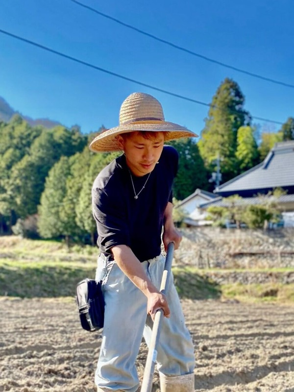
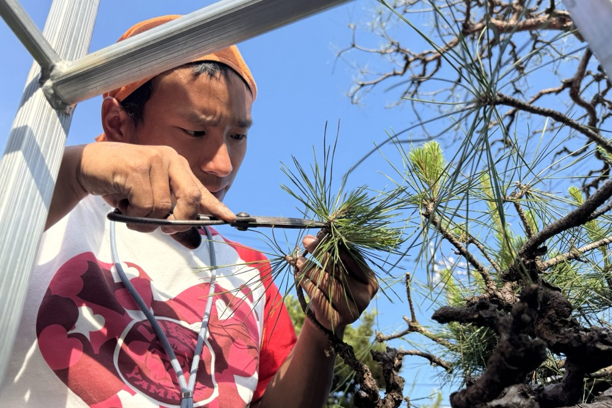
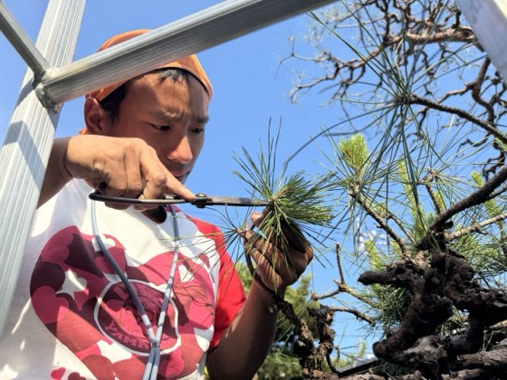
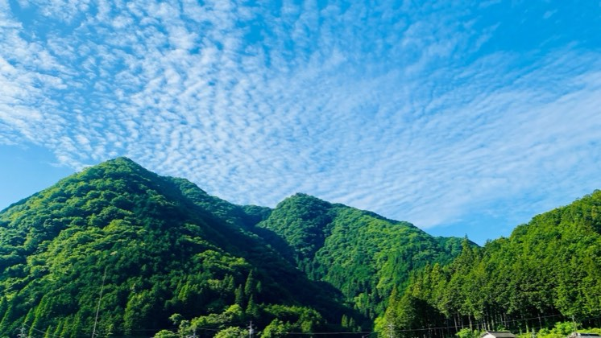
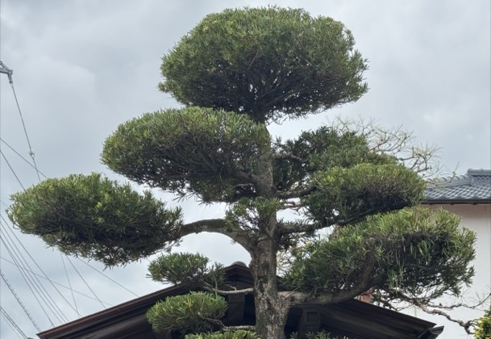
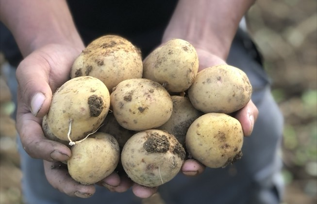
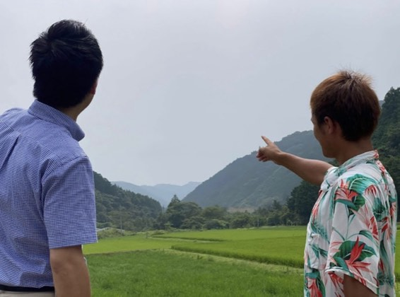
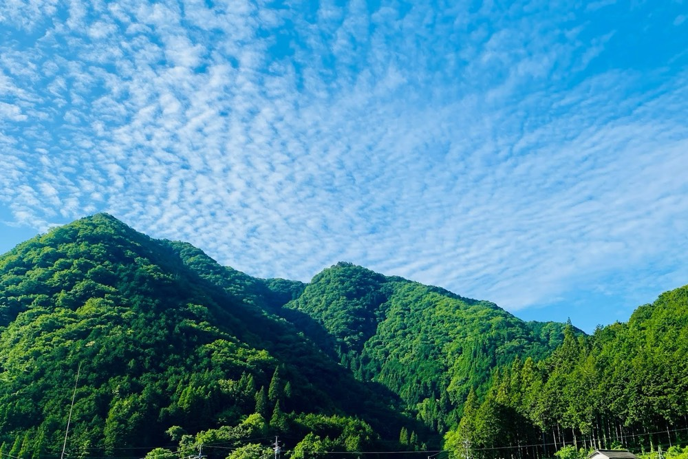

岡山を耕し未来へ!虎倉ファームの挑戦
増成 彰信akinobu masunari
虎倉ファーム 代表取締役
1997年3月9日岡山県生まれ。2015年の高校卒業後、地元の農園やブドウ農家にて栽培技術の研鑽を積む。2018年に独立し、個人事業として「虎倉ファーム」を創業。2020年からは完全無農薬、固定種・在来種の栽培や自家採種に特化し種の普及活動に奔走。現在は御津・建部の農業後継者クラブ「ヤングファーマーズ」の会長等も務め若者の視点から地域の農業振興と未来のために邁進している。
企業サイトを見るCHAPTER 01
夢を追いかけ飛び込んだ農業への原点

Q農業を始めたきっかけと、これまでの歩みを教えてください。
A私の原点は小学5年生の時、テレビ番組『金スマ』の『ひとり農業』を見たことです。大自然の中で生き生きと土に触れる姿を見て、直感的に「楽しそう!」と感銘を受けました。
中学2年時の職場体験を機に高校1年から地元のぶどう狩りの観光農園でアルバイトを始めたりと農業の道を進み始めていました。しかし親からは「農業では稼げない」「3K(キツい、汚い、危険)だ」と猛反対され、一時は学校教諭を目指して岡山大学への進学を真剣に考えた時期もありました。
それでも農業を諦めきれず、卒業後はそのまま観光農園等に就職し、数年間研鑽を積みました。そして2018年に「自分の手で理想の農業を形にしたい」という強い想いから独立しました。
実家でもある岡山市北区御津虎倉の「虎倉」の地名を戴き屋号「虎倉ファーム」と命名。一人で立ち上げました。当時21歳。資金は0円。あの時の決断が現在の歩みに繋がる第一歩となりました。
若気の至りでもあります(笑)
Q周囲の反対や厳しい環境の中で、独立への不安はなかったのですか?
A周囲からは「今の時代に新規就農はリスクが高すぎる」という声ばかりでした。天候の影響を受けやすく、年々増える離農者や若者の農業参入の少なさも深刻な現実です。。。
しかし私の中に不安は一切なく、「誰もやらないからこそチャンスがある。自分の力を試したい」という高揚感の方が勝っていました。高校時代から現場でブドウ栽培などの実務を徹底的に学び、信頼関係を築いてきたプロセスが揺るぎない自信になっていたのです。「人生は一度きりなのだから、やりたいことをして全力で楽しもう」という覚悟も決め、がむしゃらに突き進んだ経験が、経営者としての私の基礎を支えています。
CHAPTER 02
固定種へのこだわりと「命を育む」覚悟
Q虎倉ファームの事業の特徴や、他社にはない強みを教えてください。
A私たちは農園事業のほかに、造園事業、車事業、業務委託事業の4つを展開していますが、他社にはない強みは完全無農薬栽培・遺伝子を固定した野菜「固定種」の栽培・そして最大の強みは固定種の自家採種です。
現在流通している野菜の99%は大量生産向けの「F1種」(種採り不可)ですが、当ファームでは固定種を毎年自分たちの手で種採りを行っています。野菜によって種採りの方法や保存期間が異なるため非常に繊細な技術を要しますが、固定種の野菜には大自然のパワーが秘められており、本来の深い味と圧倒的な栄養価があります。食べていただいた多くの方から「元気になり、免疫力が高まって風邪を引かない体になった」という声もいただいており、食を通じて真の健康を届けることこそが私たちの強みですね!
Q野菜作りの現場において、最も大切にされている信念は何でしょうか?
A何よりも大切にしている信念は、野菜たちに声をかける「言葉の力(言霊)」です。植物は自分で動けない分、周囲の声や人間の感情による「波動」を鋭く受け取っています。私は毎日の作業中、畑の野菜を「我が子」のように愛おしく思いながらプラスな言霊を届けながら日々向き合っています。
2021年に同じ環境下の中で「ありがとう」と毎日愛情を込めて声をかけた野菜と逆に悪い言葉をかけた野菜で実験をしました。
葉と根の成長や野菜の質が全く異なり、言霊の大切さを肌で実感しました。





CHAPTER 03
農業の未来への挑戦と観光農園への展望

Q現在、農業人口の減少が深刻ですが、どのようなビジョンを持たれていますか?
A日本の農業人口はかつての600万戸から現在は約100万戸にまで激減し、多くを輸入に頼っているのが現状です。しかし若者が少ない業界だからこそ、私たちのような若い世代が参入することで、これまでにない新しいアイデアや独自の武器を生み出せる絶好のチャンスだと捉えています。
私は虎倉ファームの経営と並行して、岡山市の農業後継者クラブ「ヤングファーマーズ」の会長や、岡山地方新農業経営者クラブ連絡協議会の副会長(取材時)を務めています。これらの役職を通じて、まずは多くの若者たちに農業そのものの魅力や楽しさを知ってもらい、興味を持ってもらうための普及活動に全力で注力しています。無農薬や固定種を強制するのではなく、まずは農業という職に触れてもらうことが大切だと考えておりビジョンでもありますね!
Qこれからの具体的な目標や、拠点である岡山への想いをお聞かせください。
A岡山は「果物王国」として全国に誇れる素晴らしい県です。今後はこれまで培ってきたノウハウを活かし、ブドウをはじめとする果物栽培をさらに拡大しながら、《また行きたい!》と皆が思える「観光農園」を開園したいという大きな夢を持っています。また、造園事業や車事業などの横のつながりもフルに活用し、あらゆる角度から「種取り」の重要性や固定種野菜の普及活動を行い、虎倉ファームのコンセプトでもある「食は世界を救う」の実践をさせていただきます。
また会社を発展させていくことは、地元の環境を守り、地域に新しい雇用を生み出すことにも直結します。足を止めることなく、スピード感を持って岡山の農業の未来を明るく照らす挑戦を続けてまいります。